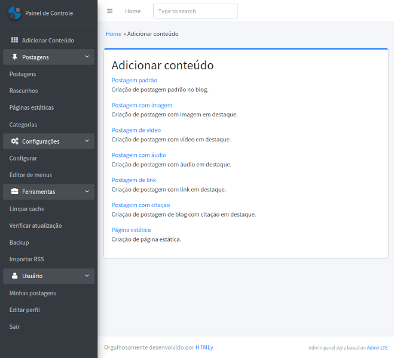
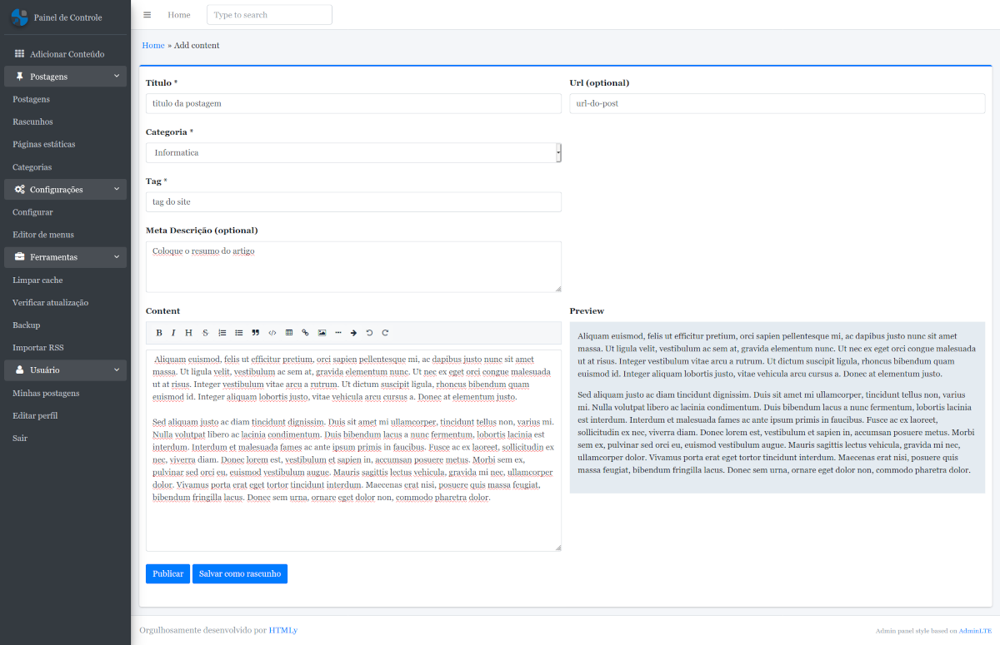

HTMLy CMS em Língua Portuguesa
Informação Geral
Objetivo
O intuito deste projeto é servir de documentação básica em língua portuguesa sobre o HTMLy CMS. Aqui você encontrará diversas informações úteis como instalação e configuração de seu site ou blog utilizando a plataforma.
Motivação
Aplicações com banco de dados são complexas para configurar e dar manutenção, além de apresentarem problemas frequentes de segurança.
A maioria dos sites/blogs são simples, e a utilização de um serviço de grandes corporações como o Blogger (muito defasado em questão de recursos em seu editor e complicado para alteração em arquivos de template XML) ou o software livre Wordpress (muito carregado, complexo e que sofre com diversos ataques de crackers) são más escolhas.
O HTMLy é simples, fácil de instalar e configurar. Com um pouco de esforço você pode criar seu tema/plugin e ajudar na expansão da comunidade. Este projeto o ajudará nesses primeiros passos.
Utilizando este gerenciador de conteúdo você estará de acordo com o conceito de midias alternativas indie web: descentralização dos dados de grandes corporações, maior segurança e privacidade, pois estará utilizando um domínio e hospedagem própria.
Sobre o HTMLy
O HTMLy foi construido com o objetivo de ser uma plataforma de blogging simples sem precisar se preocupar com atualização de versão nem plugins, além de não usar banco de dados (os dados são armazenados em arquivos de texto simples, do termo em inglês flat file cms).
De acordo com a postagem sistema de blog personalizado a idéia base para o CMS partiu do artigo do Tutorialzine.
O CMS HTMLy é desenvolvido pelo indonesiano Danang Probo Sayekti e comunidade no GitHub como software livre de código aberto sob a licença GNU v2 com os princípios RAD e KISS.
O projeto teve sua primeira versão liberada em 31 de Janeiro de 2014 após 2 meses de desenvolvimento. Com 7 anos de existencia em 2021, seu progresso foi interrompido em 24 de Janeiro de 2016 na versão 2.7.4 devido a falta de tempo do desenvolvedor. Conforme comentários no GitHub, algumas pessoas chegaram a criar forks, porém não deram continuidade. O projeto retornou em 06 de Maio de 2020 e em fevereiro de 2021 houve a atualização do painel de administração e diversas melhorias [+detalhes].
Baixe a última versão estável: HTMLy v3.0.5 (04/03/2025 com tradução em pt-BR completa)
Teste a versão de demo no site oficial ou no Softaculous.
Características do CMS
Construído com simplicidade e velocidade em mente, o CMS apresenta vários recursos:
- Painel de administração;
- Contagem de visitas por página no painel;
- Páginas estáticas (exemplo: Sobre, Contato...);
- Categorização com tags e categorias (suporte a várias tags);
- Editor Markdown (com suporte a HTML) com pré-visualização e carregamento de imagem;
- Paginação;
- Página do autor;
- Suporte a vários autores;
- Página de arquivos (por ano, ano-mês ou ano-mês-dia);
- Meta canônica, descrição e rich snippets para SEO;
- URLs amigáveis / Sitemap / Links sociais;
- Google Analytics;
- Breadcrumb;
- Comentários Disqus (opcional);
- Comentários do Facebook (opcional);
- Pesquisa integrada;
- Postagem de rascunho;
- Postagens relacionadas (baseadas em tags de postagens);
- Widget de nuvem de arquivos e tags;
- Navegação de postagem (postagem anterior e próxima);
- Temas existentes com design responsivo;
- Miniatura do teaser para imagens e vídeos do Youtube;
- PHP puro com Tags HTML misturadas (variável $bodyclass para personalizar o tema);
- API JSON / OPML;
- Feed RSS e Importador RSS 2.0 (básico);
- Backup online;
- Criador de menu
- Cache de arquivos;
- Multi-idioma (i18n);
- Permissões de usuário;
- Atualização automática.
Ajude o projeto a crescer
Você pode divulgar o projeto de diversas maneiras: crie vídeos, imagens e escreva em seu site ou blog e compartilhe nas redes sociais sobre o CMS.
No site do softAculous informe sua opinião sobre o HTMLy CMS e dê uma nota.
Há também outros sites para difundir o que acha do CMS: Alternativeto, SaasHub e o Slant.
Faça um fork do HTMLy CMS e envie novas correções de bugs, traduções e melhorias. Também faça sugestões ou relate um problema.